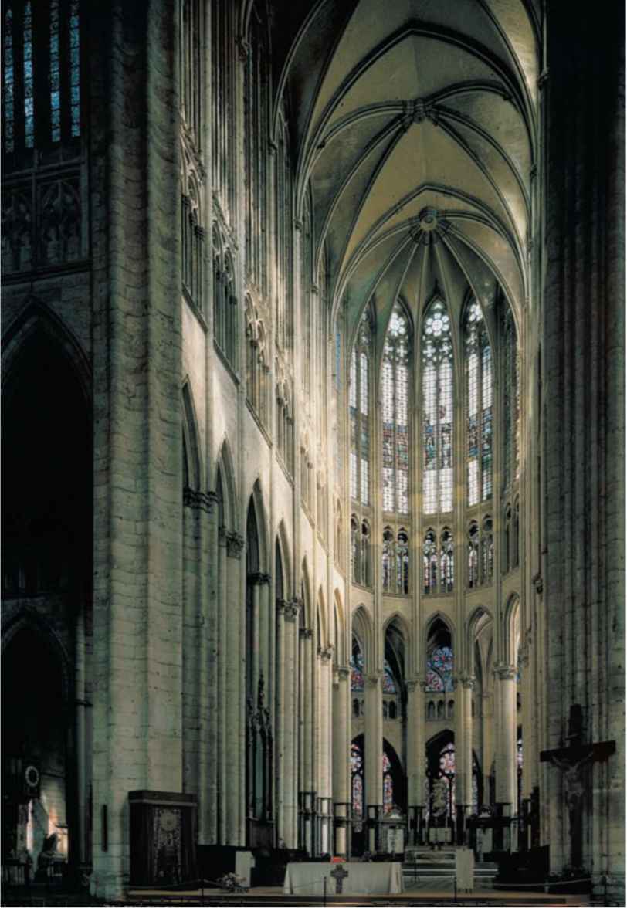
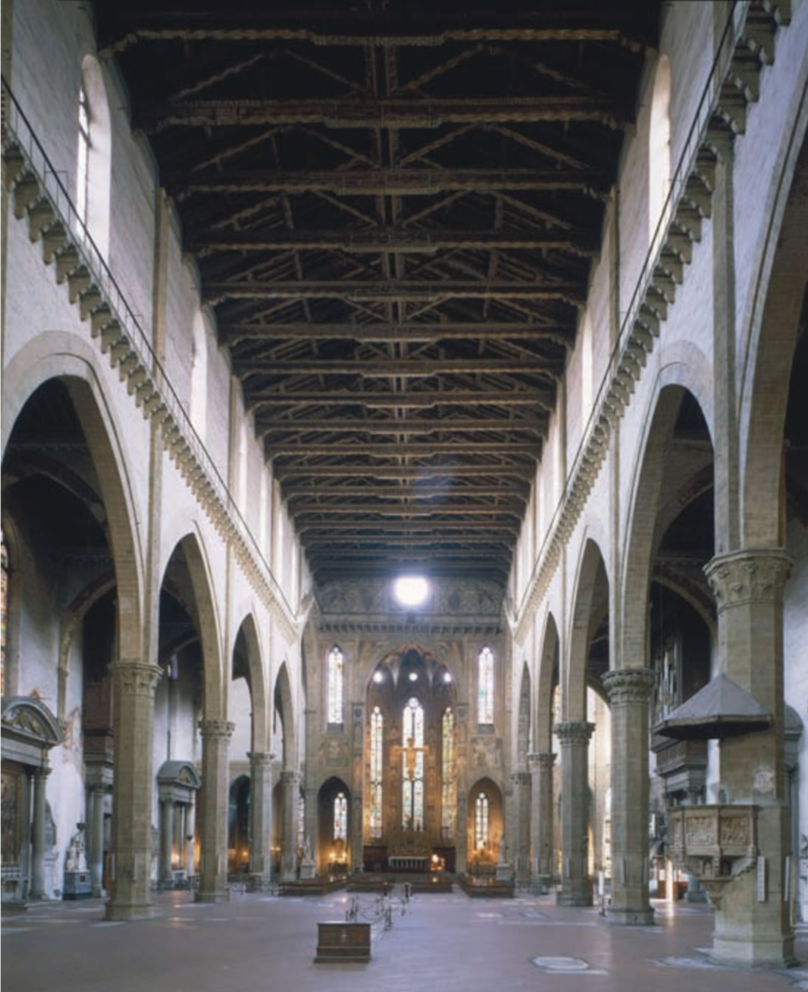
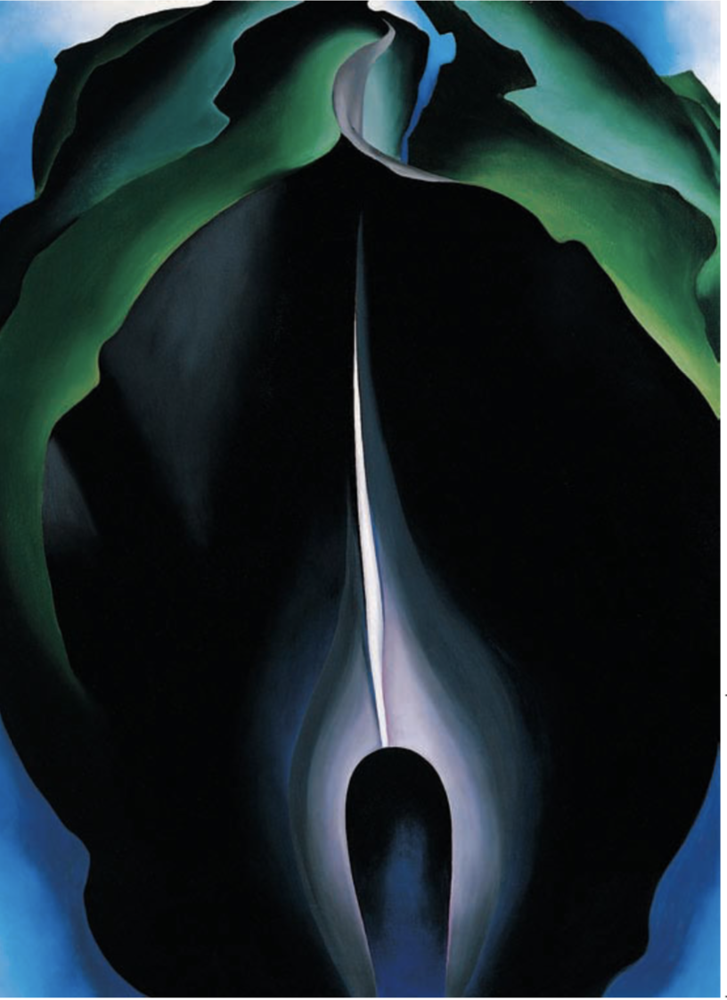
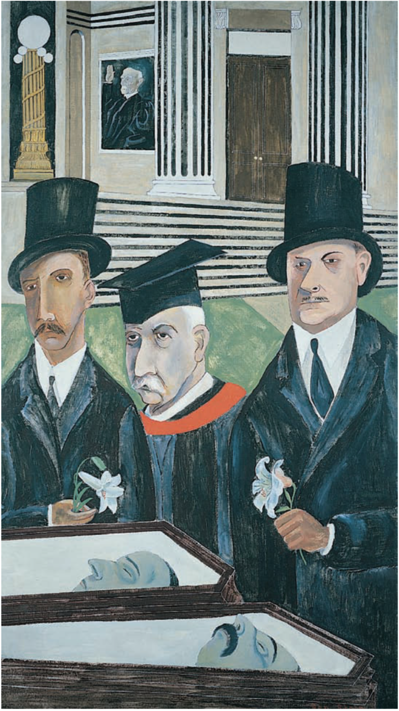

Central aim of Art History
A central aim of art history is to determine the original context of artworks.
Art historians' target
Art historians seek to achieve a full understanding not only of why these “persisting events” of human history look the way they do but also of why the artistic events happened at all.
Relationship between Art History and History
The study of history is therefore vital to art history. And art history is often very important to the study of history.
Classification
Scholars traditionally have classified such works as architecture, sculpture, the pictorial arts (painting, drawing, printmaking,and photography),and the craft arts, or arts of design.
The craft arts comprise utilitarian objects, such as ceramics, metal- work, textiles, jewelry, and similar accessories of ordinary living. Artists of every age have blurred the boundaries among these categories, but this is especially true today,when multimedia works abound.
An indispensable subject of art historical inquiry is chronology, the dating of art objects and buildings.
Physical evidence often reliably indicates an object’s age
Documentary evidence can help pinpoint the date of an object or building when a dated written document mentions the work.
A painter might have depicted an identifiable person or a kind of hairstyle,clothing,or furniture fashionable only at a certain time.
Stylistic evidence is also very important.The analysis of style—an artist’s distinctive manner of producing an object — is the art historian’s special sphere. Unfortunately, because it is a subjective assessment, stylistic evidence is by far the most unreliable chronological criterion.
Period style refers to the characteristic artistic manner of a specific time, usually within a distinct culture, such as “Archaic Greek” or “Late Byzantine.”
Regional style is the term art historians use to describe variations in style tied to geography. Like an object’s date, its provenance, or place of origin, can significantly determine its character. Very often two artworks from the same place made centuries apart are more similar than contemporaneous works from two different regions.
|  |  |
| Figure 1 Choir of Beauvais Cathedral, Beauvais, France, rebuilt after 1284 | Figure 2 Interior of Santa Croce, Florence, Italy, begun 1294 |
Personal style, the distinctive manner of individual artists or architects, often decisively explains stylistic discrepancies among monuments of the same time and place.
|  |  |
| Figure 3 Georgia O’Keeffe, Jack-in-the-Pulpit No.4,1930.Oil on canvas. National Gallery of Art, Washington,D.C. (Alfred Stieglitz Collection, bequest of Georgia O’Keeffe). | Figure 4 Ben Shahn,The Passion of Sacco and Vanzetti, 1931–1932. Tempera on canvas. Whitney Museum of American Art, New York (gift of Edith and Milton Lowenthal in memory of Juliana Force). |
Art historians traditionally separate pictorial subjects into various categories, such as religious, historical,mythological,genre (daily life),portraiture, landscape (a depiction of a place), still life (an arrangement of inanimate objects), and their numerous subdivisions and combinations.
Iconography—literally, the “writing of images”—refers both to the content, or subject of an artwork,and to the study of content in art. By extension, it also includes the study of symbols, images that stand for other images or encapsulate ideas.
Throughout the history of art,artists have used personifications—abstract ideas codified in human form.